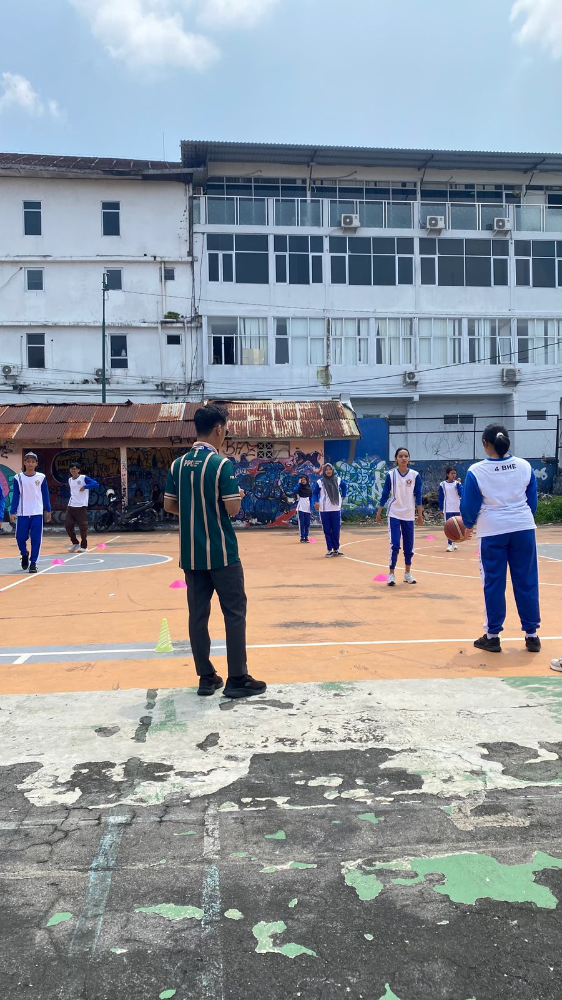
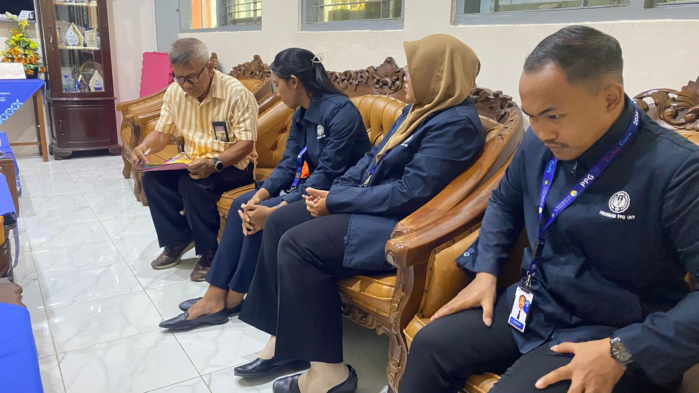
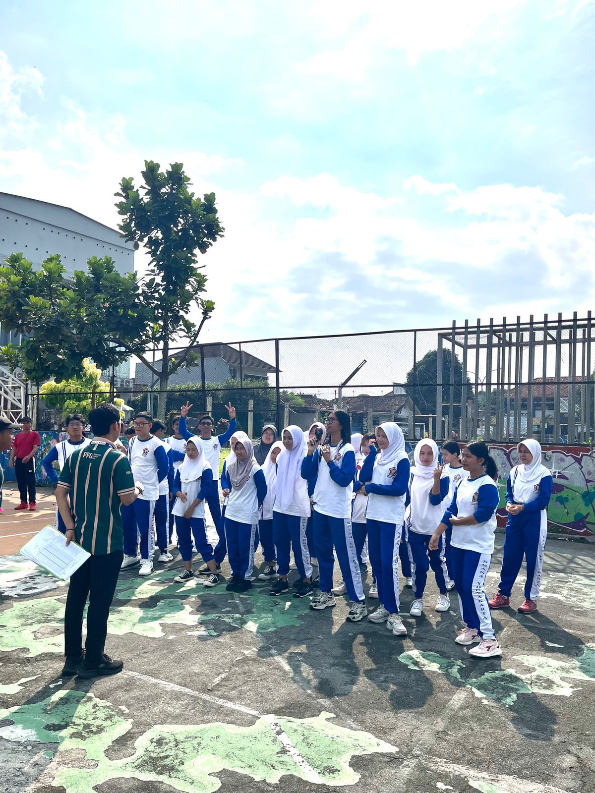
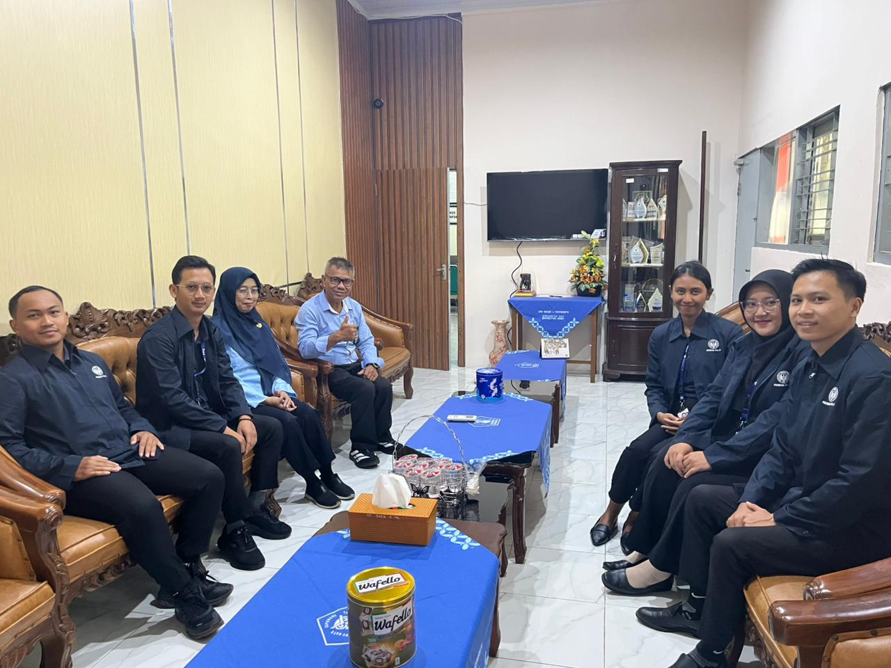
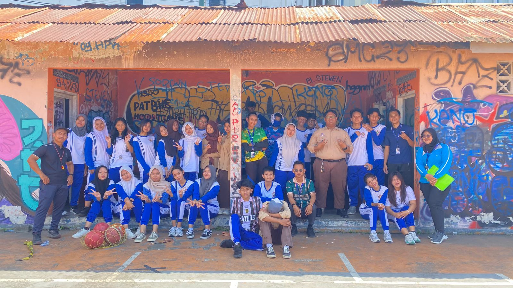
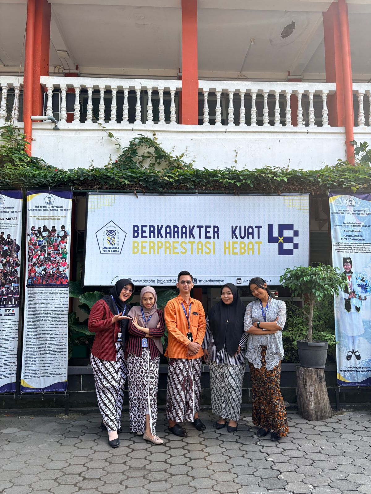
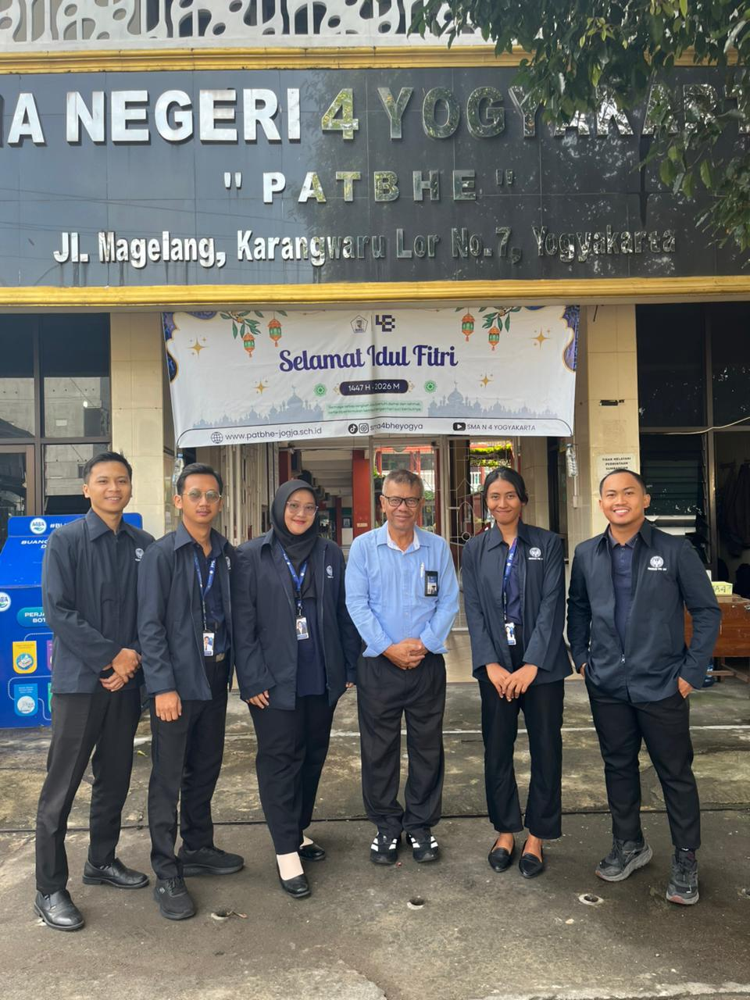

Galeri Dokumentasi
Kumpulan momen dan kegiatan selama pelaksanaan Praktik Pengalaman Lapangan (PPL) satu SMAN 4 Yogyakarta

Praktik Mengajar Kelas XI
Praktik mengajar langsung di kelas XIF6 dengan materi Atletik

Bimbingan Kelompok
Bimbingan bersama DPL membahas terkait pelaksanaan selama PLL 1 berlangsung

Observasi Sekolah
Kegiatan pengenalan lingkungan dan budaya sekolah.

Asesmen Pembelajaran
Melaksanakan asesmen pembelajaran sumatif atletik

Monitoring DPL
Kunjungan DPL guna memonotoring pelaksanaan kegiatan PPL 1

Foto Bersama
Foto bersama Murid kelas XIF6

Foto Bersama Rekan PPL
Foto bersama Rekan PPL 1 pada saat kamis Pon

Foto Bersama DPL
Foto bersama Dosen Pembimbing Lapang